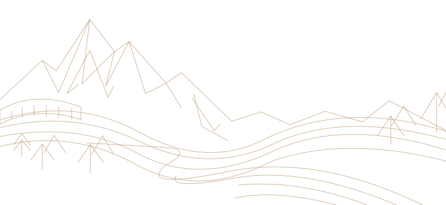

A HUMAN INTERNET IS STILL HERE
Which way would you like to go?
Pick a line. Follow a useful route.
Writing suggestions
Generated answers
Browser assistants
Generated answers
Browser assistants
AI summaries
Suggested feeds
Synthetic imagery
Suggested feeds
Synthetic imagery
Independent tools
Source material
Human communities
Source material
Human communities
DIFFERENT
ROUTES
SAME OPEN
INTERNET
ROUTES
SAME OPEN
INTERNET

THE WIDER WEB
DEPARTURES
A way around.
Read the map
Change a setting
Change the route
Change the service
Routes reduce a particular inconvenience.None certify an entirely AI-free internet.